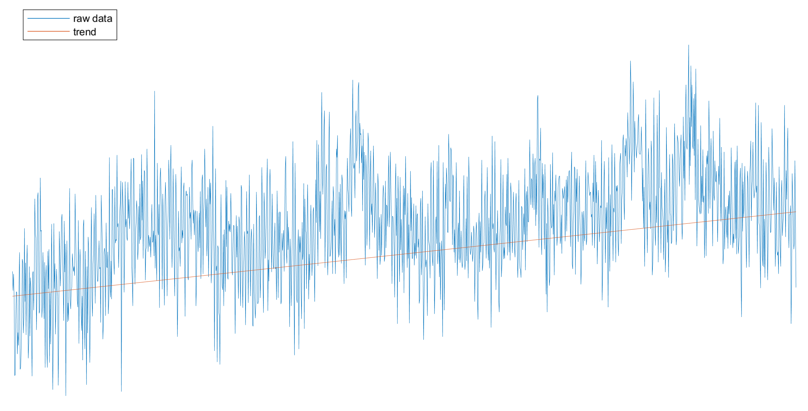
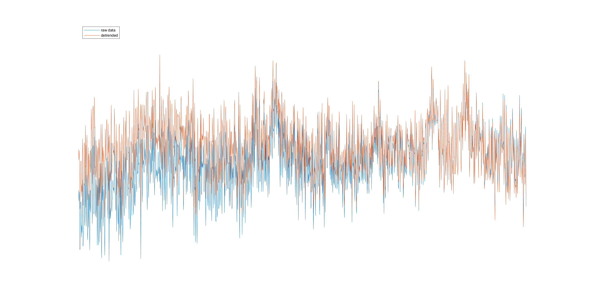

This function removes linear trends from the time domain of image time series (dimensions Y,X,T) or image time series split by events (dimensions Y,X,T,E) data. In the first case, the linear trend will be calculated from the whole recording whereas in the second, the trends will be calculated for each trial.
Input
This function accepts only image time series (with dimensions Y,X,T) or image time series split by events (with dimensions Y,X,T,E), given as a .dat file or as a numeric array. UMT structures and .umt files are not supported. A .dat file is read, detrended and written in slabs, so the recording is never loaded whole in memory (Low-RAM mode is always on).
The algorithm
The first and last few frames are used to solve for the linear function:
Then, the linear trend is substracted from the data as:
Here is an example showing the the temporal profile of a pixel (in blue) and the linear trend of the signal (in orange):

And here is the comparison between the original data (in blue) and the detrended signal (in orange):

Output
The output of this function is the detrended data with the same dimensions as the input data and the same representation: a .dat input gives the file data_detrended.dat in the SaveFolder, and a numeric array input gives a numeric array.
Baseline window
If an events.mat file exists in the SaveFolder and contains a baseline period, that period is converted to a number of frames and used as the detrend window. Otherwise, a default of 7 frames is used. The conversion uses the frame rate of the data, which is read from the .dat header (a numeric array input needs the FrameRateHz parameter when the baseline period is defined).
Event-split data
For data split by events (E axis), every trial is detrended on its own along T, including ignored event instances, so the E axis of the output still matches events.mat.